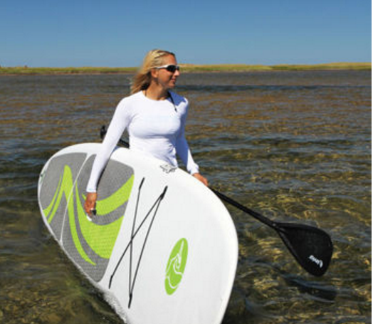

Pelican™ Rush 116 Stand-up Paddleboard
 Add to CartRelated Products
Pelican™ Flow 116 Stand-up Paddle Board

$699.99
Pelican Cross-X Stand-up Paddle Board

$799.99
Details
A quality SUP doesn't have to break the bank. Pelican's Rush SUP is multi-purpose board designed for use in flat water or light surf. It comes fully equipped with a bow bungee, an inset center handle and a padded anti-slip deck pad. Also comes with a removable 25.4 cm (10 in) fin.
Features:
- Anti-slip deck pad for secure footing
- Inset center carrying handle
- Elastic bungee cord
- Removable 25.4 cm (10 in) fin
- Polyethylene exterior with a lightweight foam core
- Maelström Paddle
Specifications
- Dimensions (L x W x H): 246.38 cm x 81.3 cm x 12.7 cm (139.25 in. x 32 in. x 5.38 in.)
- Weight: 21.3 kg (47 lb)
For more information about this product, call Pelican™ Customer Service Centre at 1-888-669-6960, or email service@pelicansport.com.
Returns
How to Return:
For an immediate refund (including shipping and handling), simply return your purchase at any one of our warehouses worldwide. If you are unable to return your order at one of our warehouses, please contact Customer Service. To expedite the processing of your return, please reference your order number.
If you request a small parcel item be picked up for return, the item must be packaged and available for pick up in the same manner as it was delivered.
If your order was delivered with "Curbside", "Threshold" or "White Glove" service, please advise Customer Service if you have disposed of the original package so that they may request the appropriate service for pick up.
Reviews
Summary:
Our family purchased two of the inflatable airis SUPs and have used them in both ocean and lakes. They are easy to inflate and as hard as a regular board, lightweight and easy to transport too
Pros:
Inflates quickly, can support two people plus dog! Nice built in velcro paddle straps and elastics to secure your gear
Cons:
Nothing Usage: Use 100% recreational as both SUP or kayakSummary:
Lightweight and very portable – these are the two most obvious attributes of this inflatable board. However, this board is also extremely stable, tracks very well and performs as well as any rigid board I have ever used in my four years of stand up paddle boarding.
Pros:
It is portable, light-weight and performs as well as any rigid board.
Cons:
Sometimes, inflating the to correct PSI can be difficult. Usage: It is used for exercise and touring. We use is on cottage lakes as well as on Lake Ontario.
Summary:
The TOUR 12.5 is built for speed and performance. The longer water line and subtle rocker on this board mean it is quick on the water. It glides easily and there is no flex unlike other inflatable boards and comes with bungee tie downs for gear
Pros:
The ability to switch to sit-down paddling provides a lot of versatility, making it a great board for family members with different paddling styles. Best uses are on calm waters and slow moving rivers. And if it gets too hot out in the sun, it’s easy to slide into the water and climb back on board, or use it as a diving/jumping platform.
Pros:
FUN
Cons:
NONE.